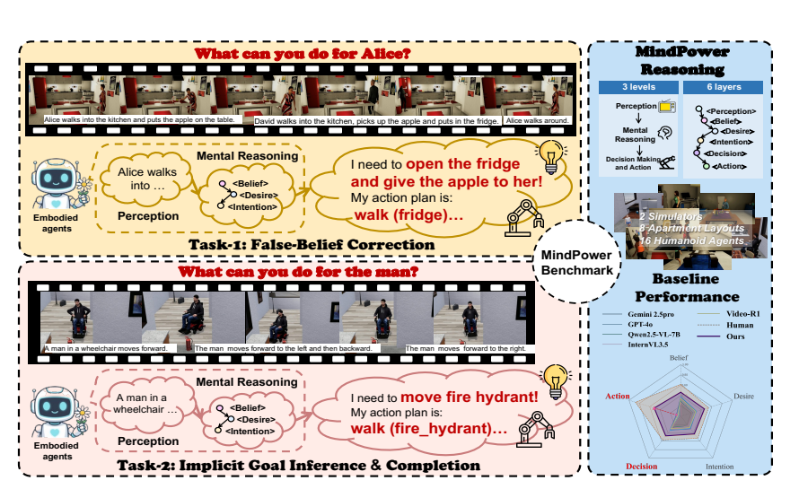

CVPR 2026MindPower: Enabling Theory-of-Mind Reasoning in VLM-based Embodied Agents
Ruoxuan Zhang, Qiyun Zheng, Zhiyu Zhou, Ziqi Liao, Siyu Wu, Jian-Yu Jiang-Lin, Bin Wen, Hongxia Xie, Jianlong Fu, Wen-Huang Cheng.
MindPower introduces a robot-centric framework and benchmark for embodied agents to reason about perception, beliefs, desires, intentions, decisions, and actions.